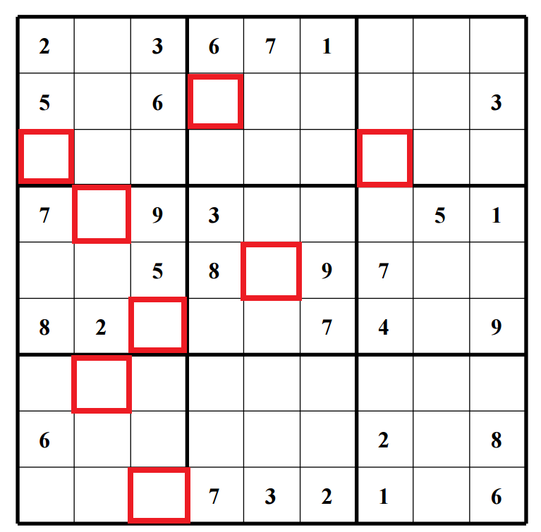

Első feladat
Kedves Gréta!
Az alábbi feladat az első része egy randevú időpontjának és helyének megtalálására, amelyet Önnek szerveztem. Az első feladat segítségével kitalálható az időpont.
A következő Soduko feladatot megoldva, majd a piros keretű cellák értékeit balról-jobbra, illetve fentről-lefele haladva beírva a csillagok helyére megkapható az időpont.
A feladat megoldásának határideje: 2016-06-03 20:00, a feladat megoldását eddig kell elküldenie a feladat kiírójának e-mail címére. (Amelyet biztonsági okokból itt nem közlünk :))

Dátum: *0**-0*-** **:00